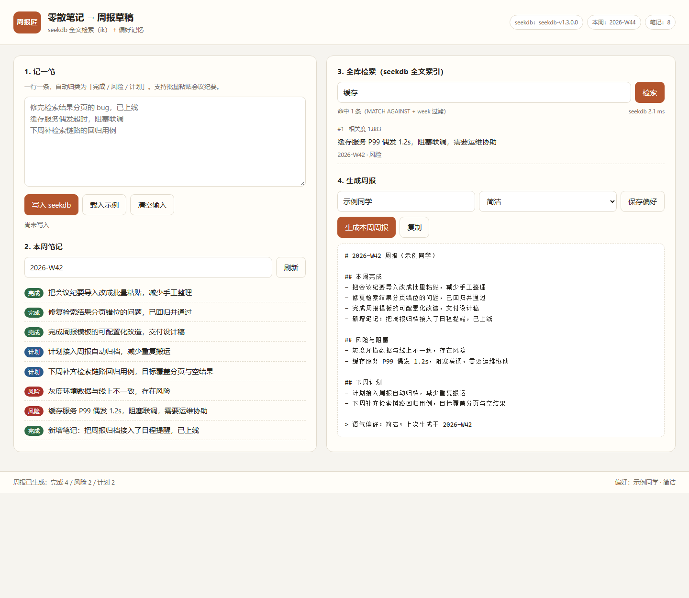

周五下午的重复劳动
一周的进展散落在聊天记录、待办清单和会议纪要里，写周报时要一条条翻、再手工分类，通常要花 30–60 分钟。
一周的进展散落在聊天记录、待办清单和会议纪要里，写周报时要一条条翻、再手工分类，通常要花 30–60 分钟。
延期、阻塞这类信息往往混在流水账里，翻的时候漏掉一条，就要等下周一才发现。
改了署名、换了团队，模板就得再调一遍；偏好没有地方存，每次都要重新设置。
下面是在本地运行时的真实截图（Chromium 1440px 视口，数据来自仓库里的示例笔记）。

一行一条粘贴进来，服务端按关键词规则归入「完成 / 风险 / 计划」，写入 seekdb 的 work_notes 表。
检索走 seekdb 的中文全文索引（FULLTEXT ... WITH PARSER ik），MATCH ... AGAINST 打分并按周过滤，命中结果带相关度与库内耗时。
按周聚合三类笔记生成 Markdown 草稿，风险项单独成节；生成记录写入 report_history。
署名、语气存于 user_prefs，下次生成自动复用，并在草稿尾部提示上次生成时间。
三张表全部落在 seekdb：笔记与归类、偏好记忆、周报历史。检索不是把数据拉到应用层过滤，而是在库内用中文全文索引打分， 应用只负责把查询条件和结果渲染出来。
SELECT id, content, MATCH(content) AGAINST('缓存') AS score
FROM work_notes
WHERE MATCH(content) AGAINST('缓存') AND week = '2026-W42'
ORDER BY score DESC;
Node.js + Express 提供 6 个 API；前端是原生 HTML/CSS/ESM，没有构建步骤，评审按说明即可跑起来。
所有配置走 .env 占位值，仓库不含任何真实凭据。
qoder/
├── server/src/index.mjs # API + seekdb 访问
├── web/ # 单页界面
├── samples/ # 示例笔记 + 灌数据脚本
└── docs/DEVLOG.md # Qoder 开发记录# 1. seekdb
docker run -d --name seekdb -p 2882:2882 oceanbase/seekdb:latest
# 2. 服务
cd qoder/server
cp .env.example .env
npm install --legacy-peer-deps
npm start # http://127.0.0.1:8891
# 3. 示例数据
cd ..
node samples/seed.mjs http://127.0.0.1:8891
打开 http://127.0.0.1:8891，周次填 2026-W42，检索「缓存」，再点「生成本周周报」，
即可看到截图中的结果。完整验证步骤与库内核对 SQL 见仓库 qoder/README.md。
本项目为 2026 OceanBase 数据库大赛「Qoder 方向」参赛作品，使用 Qoder 完成需求拆解、编码、调试与验证，
核心数据与检索能力由 seekdb 提供。开发过程记录见仓库 qoder/docs/DEVLOG.md。